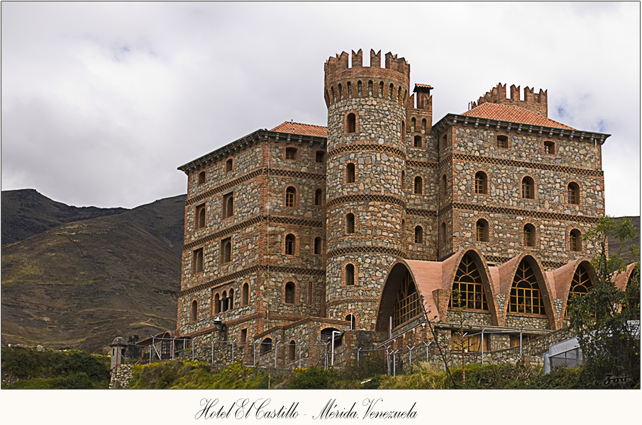
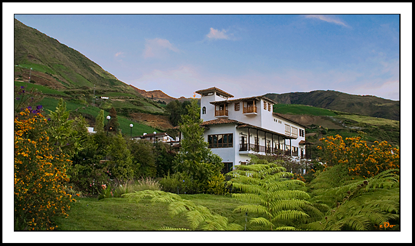
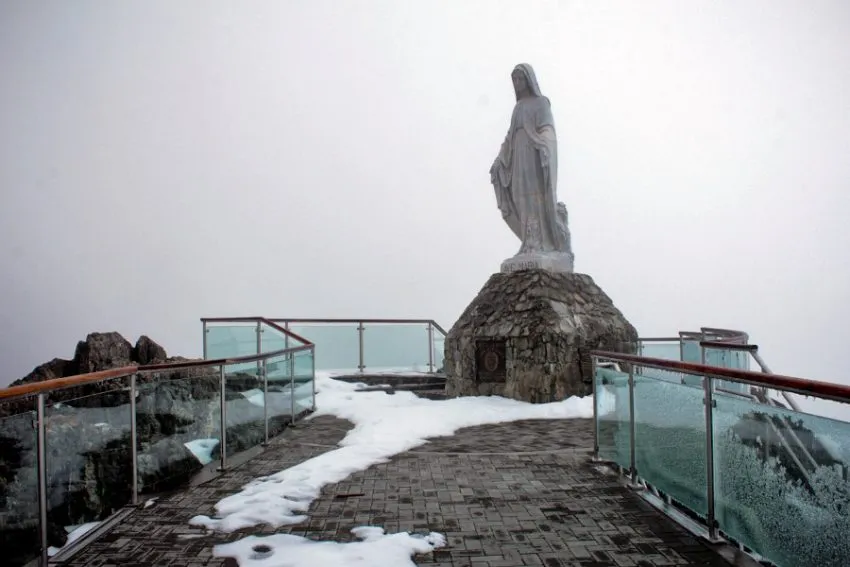
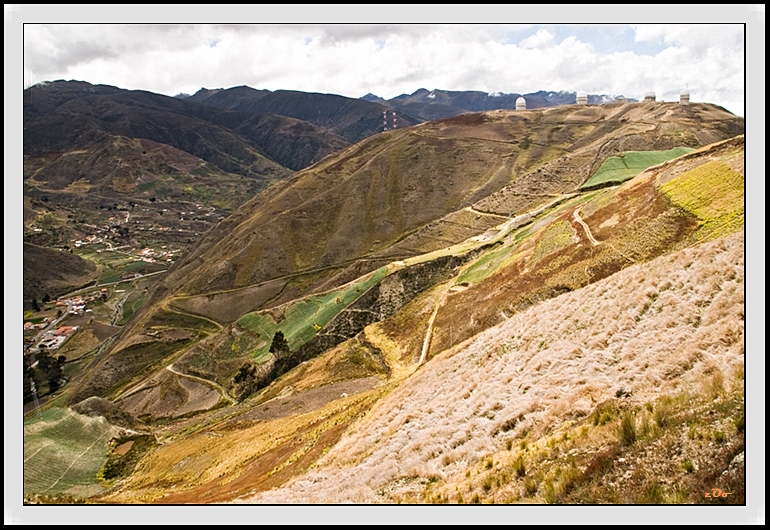

Hotel El Castillo
Según se conoce, el precursor original de El Castillo de San Ignacio
fue el empresario Ignacio Castrogiovanni, quien según la historia dice que desde que era un niño soñaba con
tener un castillo propio, así que puso en marcha lo que fue su sueño de la niñez, una vez que tenía las
posibilidades económicas, sin embargo, no fue sino hasta el año 1990 que por manos de Lidio Piva se finalizó
la construcción de la obra.

Hotel La Trucha Azul
El Hotel La Trucha Azul fue
construido
con un elegante
estilo colonial, en armonía con los paisajes andinos, con características muy especiales,
considerando todos los factores que la rodean como el clima, la topografía, el ambiente y la cultura.

La Virgen de las Nieves
La Virgen de las Nieves es la patrona y
protectora de los andinistas y montañistas en general. En octubre de 1953, los andinistas merideños del Club
Andino Venezolano propusieron la idea de colocar una imagen de la Virgen de las Nieves en Pico Espejo, en
los
imponentes glaciares de la Sierra Nevada.

El Observatorio
El Observatorio Astronómico Nacional de Llano del
Hato1
comúnmente referido como Astrofísico de Mérida es un
observatorio astronómico ubicado en los predios de la población
de Apartaderos del estado Mérida en Venezuela a una altura de
3.600 msnm convirtiéndolo en uno de los observatorios enclavados
a mayor altura del mundo.